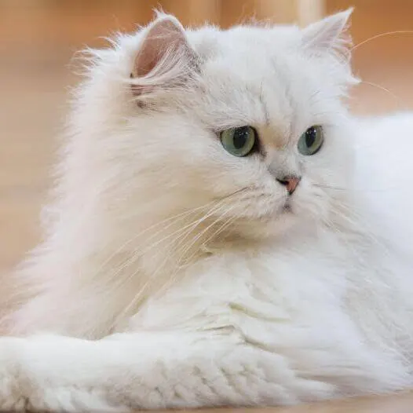
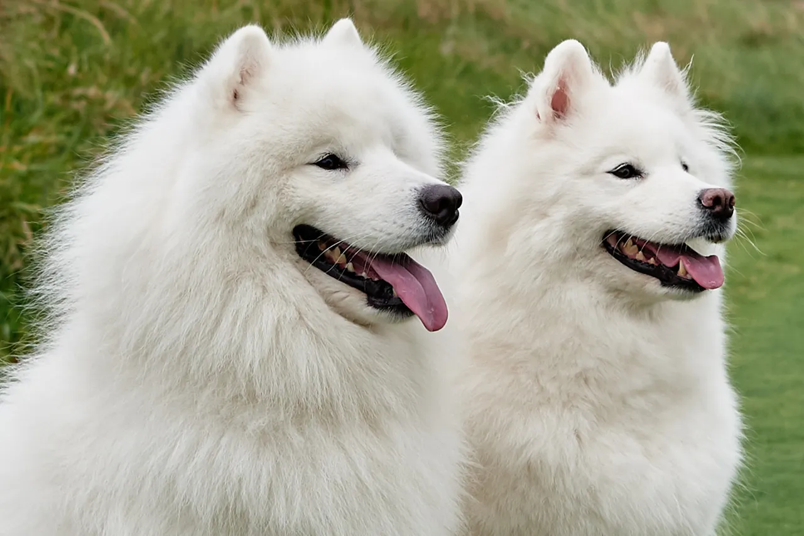
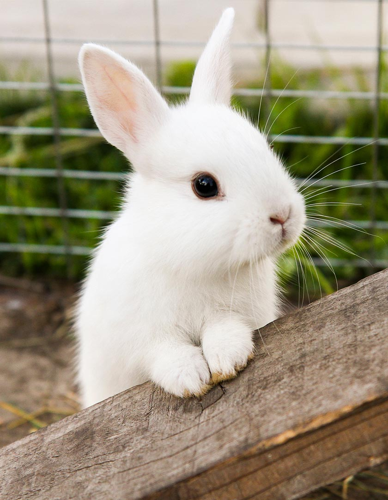
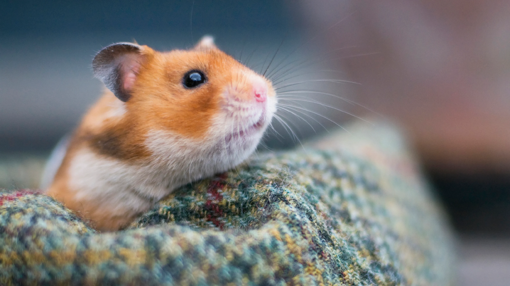

Cats

Cats are adorable little companions who fill our hearts with love, joy, and endless purrs! 🐱💕
Basic Cat needs
- Food – Nutritious food to stay healthy.
- Water – Fresh, clean water every day.
- Shelter – A safe, warm and comfortable place to rest.
- Cleanliness – A clean litter box and regular grooming.
- Healthcare – Regular vet check-ups and vaccinations.
Dogs

Dogs are loyal and playful companions who fill our lives with happiness, love, and endless tail wags! 🐶💕
Basic Dog needs
- Food – Nutritious food to stay healthy.
- Water – Fresh, clean water every day.
- Shelter – A safe, warm and comfortable place to rest.
- Cleanliness – A clean litter box and regular grooming.
- Healthcare – Regular vet check-ups and vaccinations.
Bunnies

Bunnies are gentle, fluffy little animals that love hopping, exploring and munching on fresh greens!
Basic Bunny needs
- Food – Plenty of hay, leafy greens and suitable rabbit pellets.
- Water – Fresh, clean water every day.
- Shelter – A safe, spacious and comfortable living area.
- Cleanliness – A clean living area and regular grooming.
- Healthcare – Regular check-ups with a rabbit-savvy vet.
Hamsters

Hamsters are tiny, adorable animals that love running, exploring and storing food in their cheek pouches!
Basic Hamster needs
- Food – Balanced hamster food, seeds and suitable vegetables.
- Water – Fresh, clean water every day.
- Shelter – A spacious cage with soft bedding and hiding places.
- Cleanliness – A clean cage and fresh bedding.
- Healthcare – Regular health checks and proper care.